什么是事务
事务是应用程序一系列严密的操作，所有的操作都必须成功完成，否则在某个操作中所作的所有更改将全部撤销。这也就是事务的原子性，一个事务中一系列的操作的结果只有两种，全部成功或全部失败。
事务的结束有两种，当事务中的所有步骤全部成功执行时，事务提交。如果其中一个步骤失败，将发生回滚操作，撤销到没有执行事务时的状态。
事务的ACID
事务具有四种特性： 原子性（Atomicity）、一致性（Consistency）、隔离性（Isolation）和持续性（Durability）。这四种特性简称为ACID特性。
- 原子性。事务时数据库的逻辑工作单位，事务中包含的各种操作要么全部完成，要么全部失败。
- 一致性。事务执行的结果必须是使数据库从一个一致性状态百年到另一个一致性状态。因此当数据库只包含成功事务提交的结果时，就说数据库处于一致性状态。如果数据库系统运行中发生故障，有些事务尚未完成就被中断，这些未完成的事务对数据库所作的修改有一部分已写入物理数据库，这是数据库就处于一种不正确的状态，或者说是不一致的状态。
- 隔离性。每个事务的执行不会收到其他事务的干扰。即一个事务内部的操作及使用的数据对其它并发事务时隔离的，并发执行的各个事务之间不能相互干扰。
- 持续性。也称之为永久性，指一个事务一旦提交，它对数据库中的数据的改变就应该是永久性的。接下来的其他操作或故障不应该对其执行结果有任何影响。
事务的四种隔离级别
| 序号 | 隔离级别 |
|---|---|
| 1 | Read Uncommitted |
| 2 | Read Committed |
| 3 | Repeatable Read |
| 4 | Serializable |
SQL标准定义了四类隔离级别，包括了一些具体规则，用来限定事务内外的那些改变时可见的，哪些是不可见的。低级别的隔离级别一般支持更高的并发处理，拥有更低的系统开销。
- Read Uncommitted（读未提交）
所有事务都可以看到其它未提交事务的执行结果。因性能优势并不明显，很少用于实际应用。读取未提交的数据，称之为脏读（Dirty Read）。
- Read Committed（读已提交）
大多数数据库系统的默认隔离级别。满足了隔离的简单定义：一个事务只能看见已经提交事务所做的改变。这种隔离级别也支持不可重复读（Nonrepeatable Read），因为统一事务的其它实例在该实例处理期间可能会有新的commit，所以同一select可能返回不同的结果。
- Repeatable Read（可重读）
MySQL的默认事务隔离级别，可以确保同一事务的多个实例在并发读取数据时，会看到同样的数据行。不过理论上，这回导致幻读（Phantom Read）。简单的说，幻读指当用户读取某一范围的数据行时，另一个事务又在该范围内插入了新行，当用户再次读取该范围的数据行时，会发现有新的行。InnoDB和Falcon存储引擎通过多版本并发控制（MVCC，Multiversion Concurrency Controller）机制解决了该问题。
- Serializable（可串行化）
最高的隔离级别，通过强制事务排序，使之不可相互冲突，以解决幻读问题。简而言之，它是在每个读的数据行上加上共享锁。在此级别，可能导致大量的超时现象和锁竞争。
这四种隔离级别采取不同的锁类型来实现，若读取同一个数据，容易出现问题。举个栗子：
脏读（Dirty Read）：某个事物已更新了一条数据，另一个事务在此时读取了同一条数据，由于某些原因，前一个事务进行了回滚操作，此时后一个事务所读的数据就是错误的。
不可重复读（Non-repeatable Read）：在一个事务的两次查询之中数据不一致，可能是两次查询过程中插入了一个事务更新了第一次查询的数据。
幻读（Phant Read）：在一个事务的两次查询中数据行数不一致，例如有一个事务查询了范围内的几列数据，另一个事务在这个范围内插入了新的几列数据，先前的事务在接下来的查询中，就会发现有几列数据是它先前所没有的。
在MySQL中，实现了这四种隔离级别，分别可能产生的问题如下表所示：
| 隔离级别 | 脏读 | 不可重复读 | 幻读 |
|---|---|---|---|
| Read Uncommitted | √ | √ | √ |
| Read Committed | × | √ | √ |
| Repeatable Read | × | × | √ |
| Serializable | × | × | × |
测试MySQL的隔离级别
首先我们先创建test表。
1 | create table test ( |
两个命令行客户端分别为A，B；不断改变A的隔离级别，在B端修改数据。
将A的隔离级别设置为read uncommitted(未提交读)
A：启动事务，此时数据为初始状态
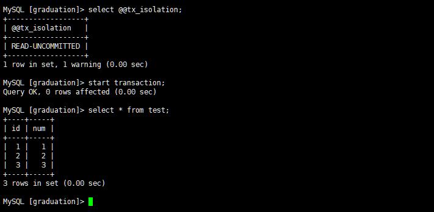
B: 启动事务，更新数据，但不提交
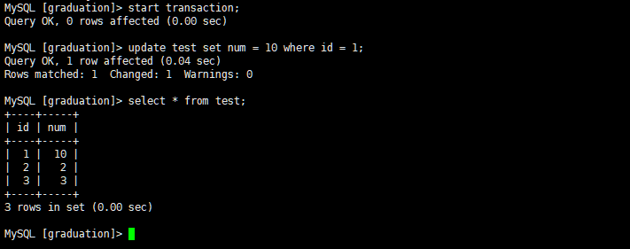
A: 再次读取数据，发现数据已经被修改了，这就是所谓的脏读。
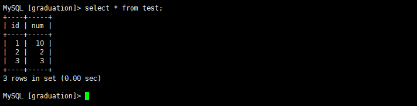
B: 回滚事务
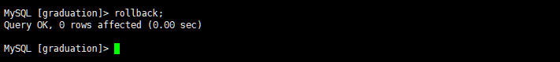
A: 再次读数据，发现数据变回初始状态
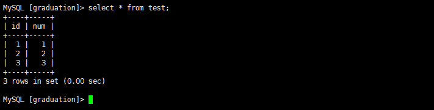
将客户端A的事务隔离级别设置为read committed（读已提交）
A: 启动事务，此时数据为初始状态
B: 启动事务，更新数据，但不提交
A: 再次读取数据，发现数据未被修改
B: 提交事务
A: 再次读取数据，发现数据已发生变化，说明B提交的修改被事务A读到了，这就是不可重复读。
经过上面的实验可以得出结论，读已提交隔离级别可以解决脏读的问题，但是出现了不可重复读的问题，即事务A再两次查询的数据不一致，因为再两次查询之间事务B更新了一条数据。读已提交只允许读取已提交的记录，但不要求可重复读。
将A的隔离级别设置未repeatable read（可重复读）
A: 启动事务，此时数据为初始状态
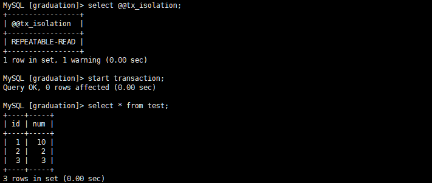
B：启动事务，更新数据，但不提交
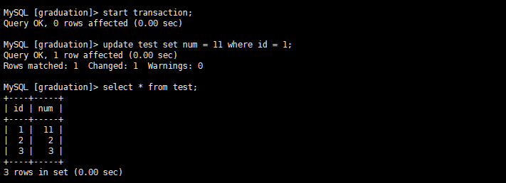
A: 再次读取数据，发现数据没有被修改
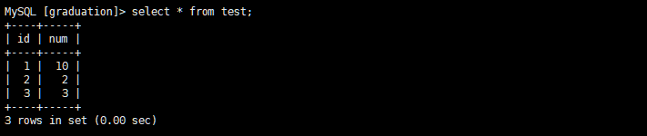
B: 提交事务
A: 再次读取数据，发现数据仍然没有被更改，这说明可以重复读了
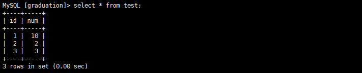
B: 插入一条新的数据，并提交
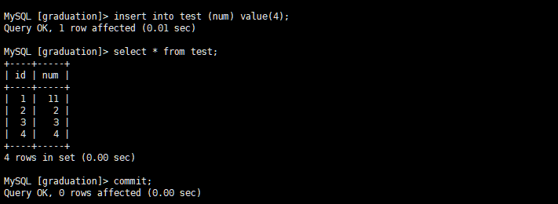
A: 再次读取数据，发现数据依然没有发生变化，虽然可以重复读了，但是读取的却不是最新的数据，这就是所谓的幻读。

A: 提交本次事务，再次读取数据，发现读取正常了
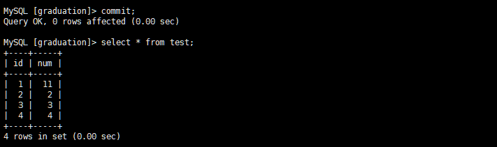
由以上的实验可以得出结论，可重复读隔离级别只允许读取已提交的记录，而且再一个事务两次读取一个记录期间，其它事务B更改该记录。但该事务不要求与其他事务可串行化。例如，当一个事务可以找到由一个已提交事务更新的记录，可能会产生幻读的问题。
将A的隔离级别设置为可串行化（Serializable）
A: 启动事务，此时数据为初始状态
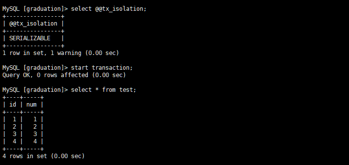
B: 开启另一个事务执行插入命令，发现B进入了等待状态，原因是因为A的事务尚未提交，只能等待。此时，B可能会发生等待超时。
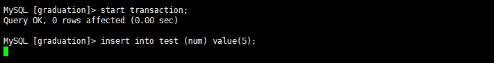
A: 提交事务
B: 发现插入成功
serializable完全锁定字段，若一个事务来查询同一份数据就必须等待，知道前一个事务完成并解除锁定为止。是完整的隔离级别，会锁定对应的数据表格，所以效率不高。